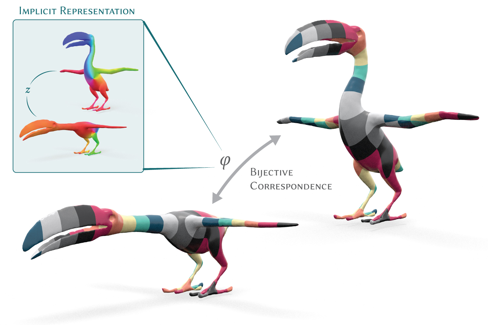
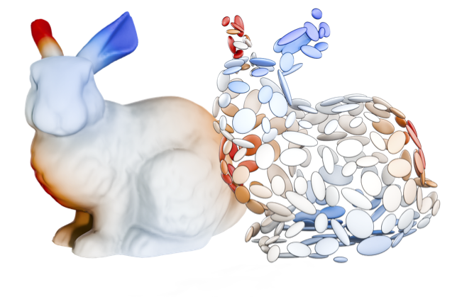
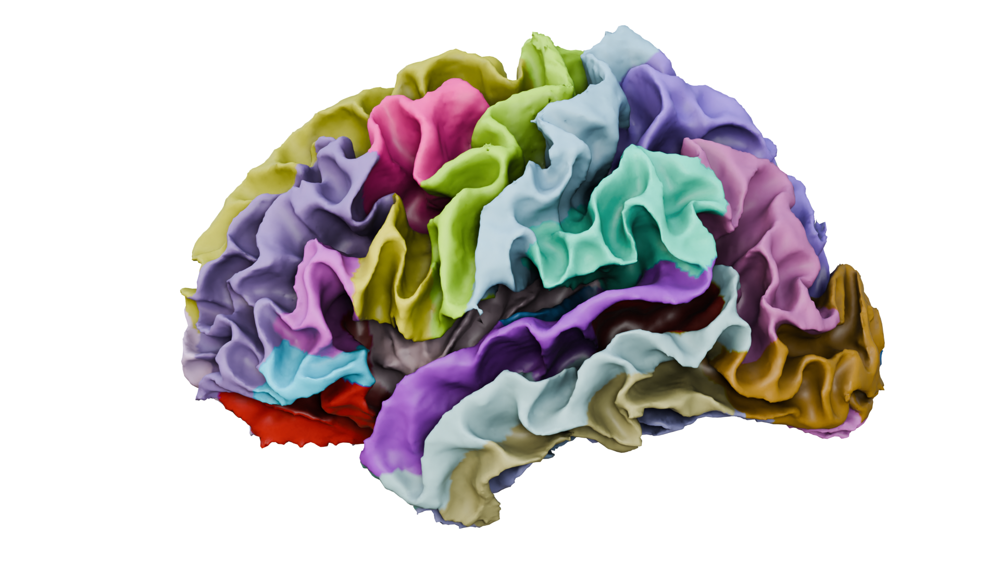
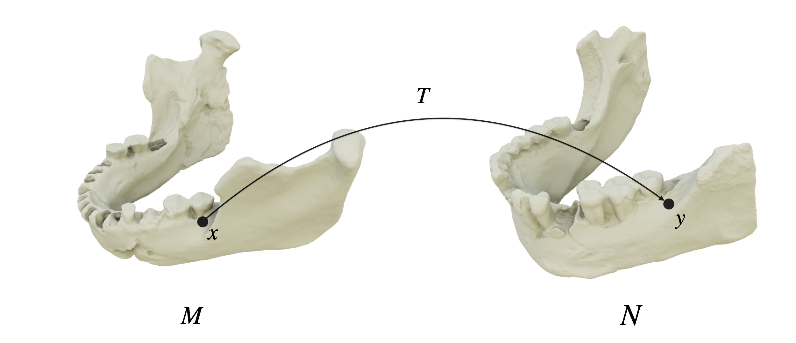
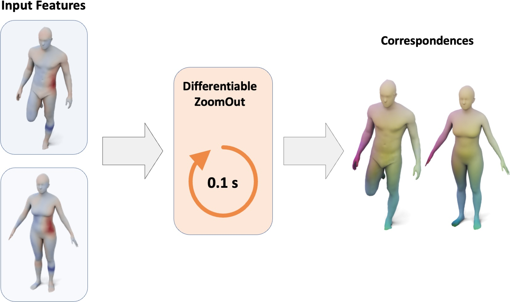
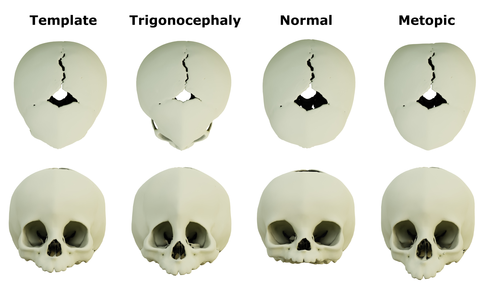
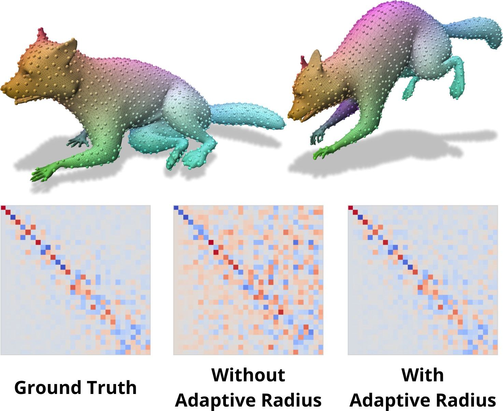
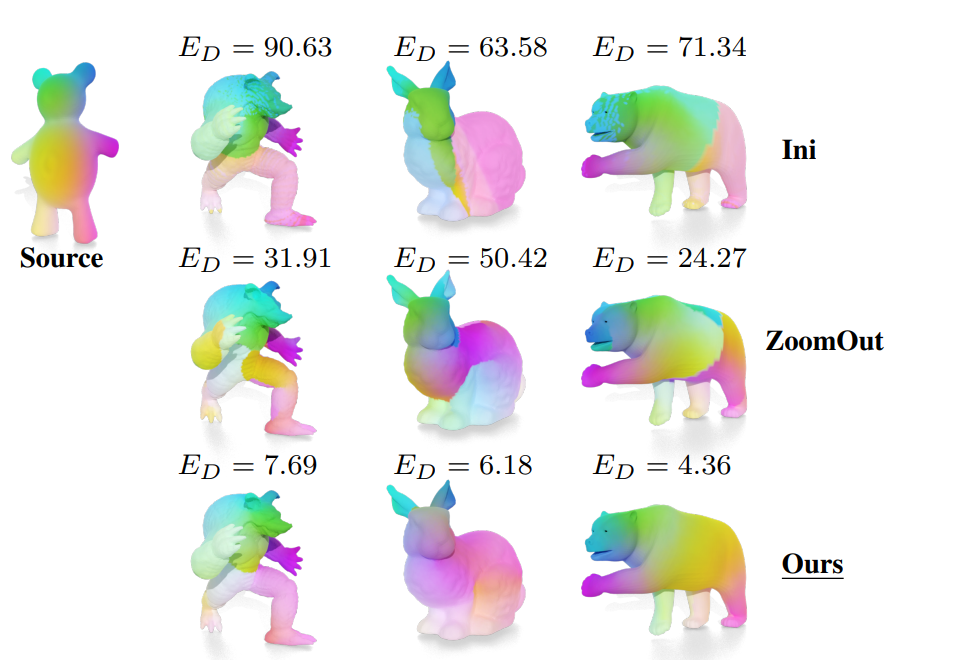
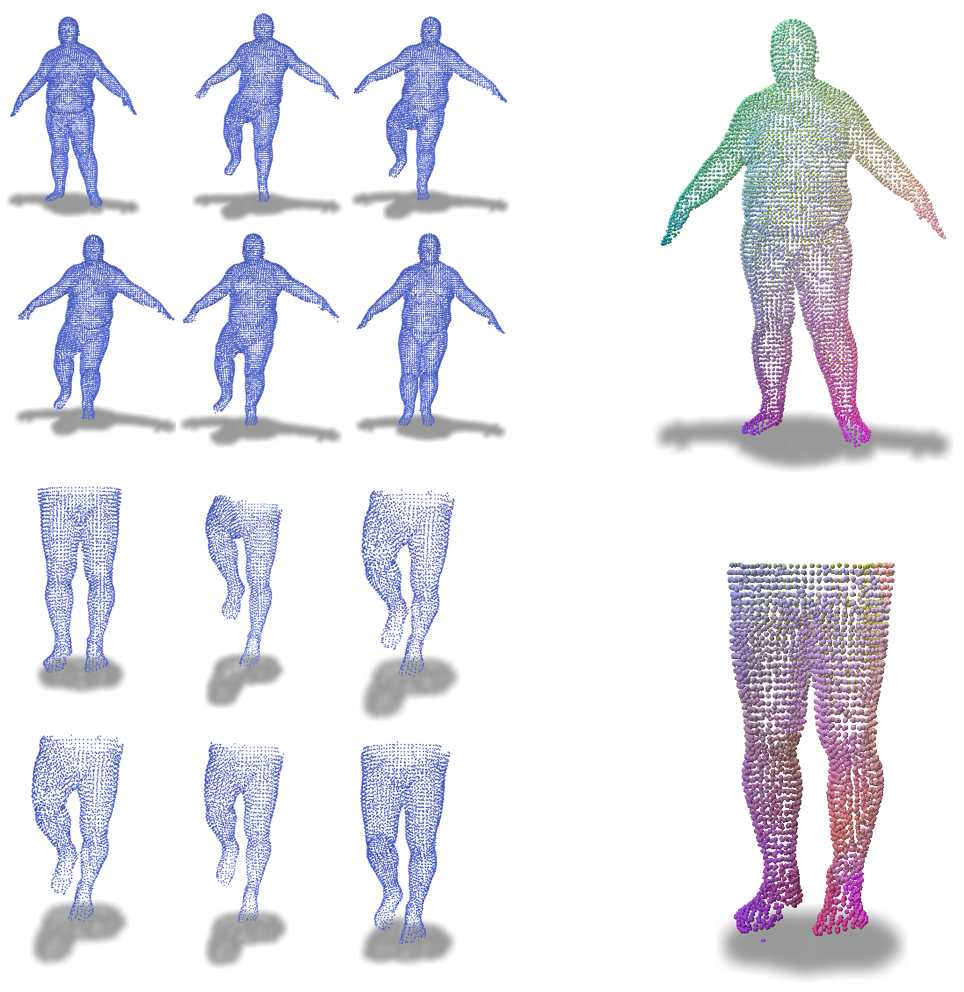

Robin Magnet
Postdoctoral Researcher · Inria Paris
I am currently a postdoc with Jean Feydy in the HeKA group at Inria Paris, where I work on shape and volume analysis with medical imaging, applied to bone fracture detection.
Before that, I obtained my PhD under the supervision of Maks Ovsjanikov at École Polytechnique (in the GeomeriX Team at LIX), studying scalable shape comparison using functional maps and spectral methods.
I am also the maintainer of pyFM, a Python library for functional maps computations.
News
May 2026
We received a Best Paper Award (Honorable Mention) for Implicit Minimal Surfaces for Bijective Correspondences at SIGGRAPH 2026
April 2026
Our paper on Implicit Minimal Surfaces for Bijective Correspondences with Etienne Corman, Yousuf Soliman, and Mark Gillespie has been accepted at SIGGRAPH 2026
April 2026
Our paper on Sinkhorn Normalization of Diffusion Kernels with Nathan Kessler and Jean Feydy has been accepted at ICML 2026.
January 2026
Our paper on Unified Brain Surface and Volume Registration has been accepted at ICLR 2026.
Jul 2025
I gave a graduate school class at the SGP Summer School 2025 in Bilbao on Robust Methods for Non-Rigid Spectral Shape Matching. Replay available here.
2025
I presented my work at IABM 2025 in Nice.
Jan 2025
I released a Python implementation of Reversible Harmonic Maps — check it out here.
All news
Publications

Implicit Minimal Surfaces for Bijective Correspondences
SIGGRAPH 2026 · ACM Transactions on Graphics (TOG)
🏆 Best Paper Award (Honorable Mention)
@article{cormanImplicitMinimal2026,
title={Implicit Minimal Surfaces for Bijective Correspondences},
author={Corman, Etienne and Soliman, Yousuf and Magnet, Robin and Gillespie, Mark},
journal={ACM Transactions on Graphics (TOG)},
year={2026},
}

Sinkhorn Normalization of Diffusion Kernels
ICML 2026 · International Conference on Machine Learning
@inproceedings{kesslerSinkhornNormalizationDiffusion2026,
title = {Sinkhorn Normalization of Diffusion Kernels},
booktitle = {2026 International Conference on Machine Learning (ICML)},
author = {Kessler, Nathan and Magnet, Robin and Feydy, Jean},
year = 2026,
}

Unified Brain Surface and Volume Registration
ICLR 2026 · International Conference on Learning Representations
@inproceedings{abulnagaUnifiedBrainSurface2026,
title = {Unified Brain Surface and Volume Registration},
booktitle = {2026 International Conference on Learning Representations (ICLR)},
author = {Abulnaga, S Mazdak and Hoopes, Andrew and Hoffmann, Malte and Magnet, Robin and Ovsjanikov, Maks and Z{\"o}llei, Lilla and Guttag, John and Fischl, Bruce and Dalca, Adrian V},
year = 2026,
publisher = {ICLR},
}

Robust Spectral Methods for Shape Analysis and Deformation Assessment
Ph.D. dissertation, Institut Polytechnique de Paris, 2024
@phdthesis{magnet2024robust,
title = {Robust Spectral Methods for Shape Analysis
and Deformation Assessment},
author = {Magnet, Robin},
school = {Institut Polytechnique de Paris},
year = {2024}
}
Scalable and Simplified Functional Map Learning
CVPR 2024 · IEEE/CVF Conference on Computer Vision and Pattern Recognition
@inproceedings{magnetMemoryScalableSimplifiedFunctional2024,
title = {Memory-{{Scalable}} and {{Simplified Functional Map Learning}}},
booktitle = {2024 {{IEEE}}/{{CVF Conference}} on {{Computer Vision}} and {{Pattern Recognition}} ({{CVPR}})},
author = {Magnet, Robin and Ovsjanikov, Maks},
year = 2024,
publisher = {IEEE},
doi = {10.1109/CVPR52733.2024.00387},
}

Assessing Craniofacial Growth and Form Without Landmarks: A New Automatic Approach Based on Spectral Methods
Journal of Morphology, 2023
@article{magnet2023assessing,
title = {Assessing Craniofacial Growth and Form Without Landmarks:
A New Automatic Approach Based on Spectral Methods},
author = {Magnet, Robin and Bloch, Kevin and Taverne, Maxime and
Melzi, Simone and Geoffroy, Maya and Khonsari, Roman H.
and Ovsjanikov, Maks},
journal = {Journal of Morphology},
year = {2023}
}
Scalable and Efficient Functional Map Computations on Dense Meshes
Eurographics 2023 · Oral presentation
@article{magnetScalableEfficientFunctional2023,
title = {Scalable and {{Efficient Functional Map Computations}} on {{Dense Meshes}}},
author = {Magnet, Robin and Ovsjanikov, Maks},
year = 2023,
journal = {Computer Graphics Forum},
doi = {10.1111/cgf.14746}
}

Smooth Non-Rigid Shape Matching via Effective Dirichlet Energy Optimization
3DV 2022 · International Conference on 3D Vision · Oral presentation
🏆 Best Paper Award
@inproceedings{magnetSmoothNonRigidShape2022,
title = {Smooth {{Non-Rigid Shape Matching}} via {{Effective Dirichlet Energy Optimization}}},
booktitle = {2022 {{International Conference}} on {{3D Vision}} ({{3DV}})},
author = {Magnet, Robin and Ren, Jing and {Sorkine-Hornung}, Olga and Ovsjanikov, Maks},
year = 2022,
publisher = {IEEE},
doi = {10.1109/3DV57658.2022.00061},
}
DWKS: A Local Descriptor of Deformations Between Meshes and Point Clouds
ICCV 2021 · IEEE/CVF International Conference on Computer Vision
@inproceedings{magnetDWKSLocalDescriptor2021,
title = {{{DWKS}} : {{A Local Descriptor}} of {{Deformations Between Meshes}} and {{Point Clouds}}},
shorttitle = {{{DWKS}}},
booktitle = {2021 {{IEEE}}/{{CVF International Conference}} on {{Computer Vision}} ({{ICCV}})},
author = {Magnet, Robin and Ovsjanikov, Maks},
year = 2021,
doi = {10.1109/ICCV48922.2021.00377},
}Code
Python bindings for functional maps related computations. Core library for shape correspondence.
A lightweight library for a memory-scalable unified representation of correspondences.
GPU-compatible Python implementation of Reversible Harmonic Maps between discrete surfaces.
Python bindings for Discrete Optimization and Smooth Discrete Optimization for functional maps.